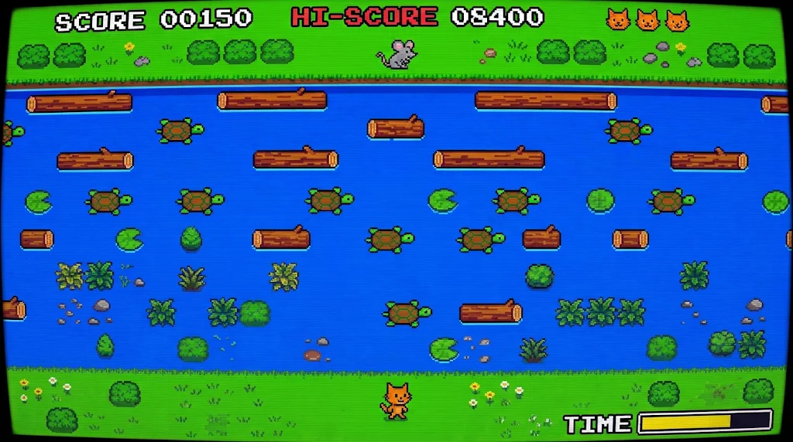
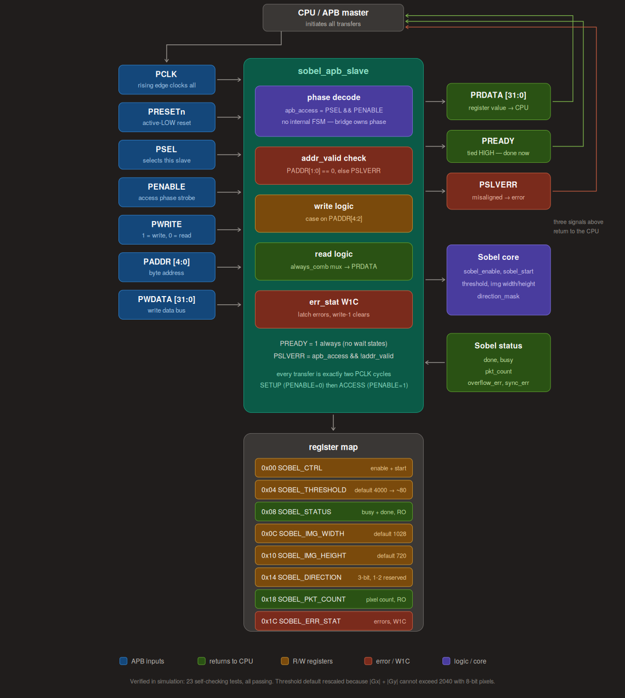
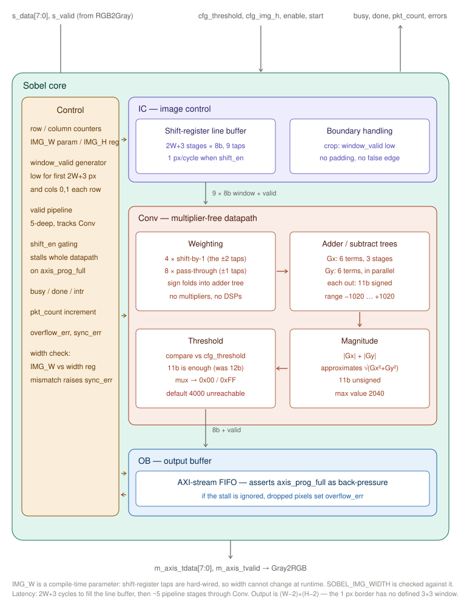

VLSI physical design
Placement, routing and the algorithms that turn a netlist into silicon.
Technion – Israel Institute of Technology
A student working where chips, circuits and physics meet.
See my projectsI study at the Technion, and I'm interested in how a chip comes to life: from the physics of the material, through the transistor-level circuit, all the way to the physical layout and the networks that connect everything.
Placement, routing and the algorithms that turn a netlist into silicon.
Amplifiers, current mirrors, differential pairs, feedback and stability.
The statistical mechanics and solid-state physics underneath every device.
Protocols and queueing theory: how data actually gets from A to B.

A pixel-art arcade game built in SystemVerilog, with a cat crossing floating logs to catch a mouse.
A hardware IP block that implements the Sobel operator to find edges in images.
My VLSI capstone: a hardware accelerator that finds edges in an image using the Sobel operator. Pixels stream in one per clock cycle, pass through a 3×3 window, and come out as a black-and-white edge map. The design is written in SystemVerilog, targets a Cyclone V DE1-SoC FPGA, and is based on the architecture in Ravichandran et al., Sensors 2025.
The APB slave is written and passes a self-checking regression of 23 tests in simulation. The core pipeline (image control, convolution, output buffer) is planned block by block and is the part I'm building now.


Built in VS Code and published with GitHub Pages as part of an AI course.
The best place to find me and my code is GitHub.
GitHub